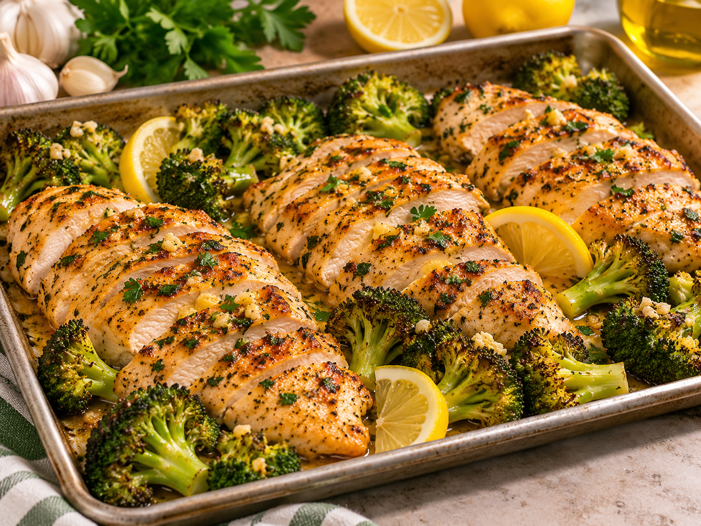
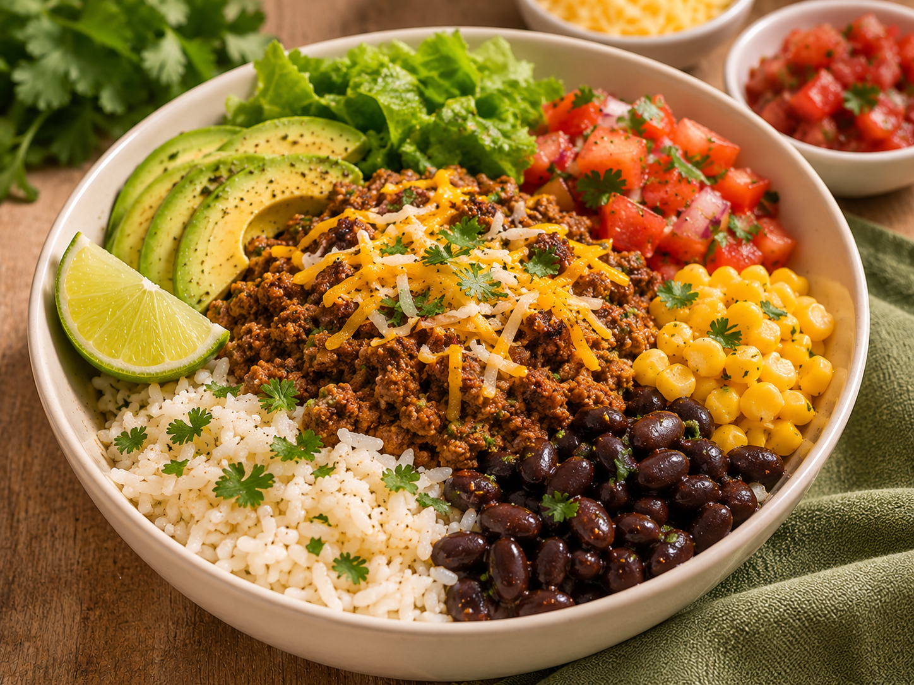

Creamy Garlic Chicken Pasta
$9.00 / meal
About $2.25 per serving · estimated
Use store-brand pasta and buy chicken on sale.
View recipeSimple dinners, smart grocery choices and practical meal plans that make every dollar go further.
Explore the $50 dinner planIllustrative ingredient-use costs for four servings, not verified store prices. Pantry staples are assumed; checkout totals may be higher. Optional toppings and substitutions can change costs.
About $2.25 per serving · estimated
Use store-brand pasta and buy chicken on sale.
View recipe
About $2.40 per serving · estimated
Stretch ground beef with rice and canned tomatoes.
View recipe
About $1.90 per serving · estimated
Use leftover cooked chicken and shredded cheese.
View recipe
About $2.30 per serving · estimated
Choose frozen broccoli or sale-priced fresh broccoli.
View recipe
About $1.60 per serving · estimated
Use canned tomatoes and frozen spinach.
View recipe
About $2.45 per serving · estimated
Use extra beans and skip optional avocado to save.
View recipeFood images are AI-generated illustrations. Recipe costs are planning targets, not price guarantees.
Seven dinners for two people, using shared ingredients and planned leftovers. This is a separate, simplified menu inspired by our recipes, not seven full four-serving recipe batches. Breakfasts, lunches and snacks are not included.
| Monday | Tomato spinach pasta |
| Tuesday | Lemon chicken & broccoli with rice |
| Wednesday | Chicken quesadillas |
| Thursday | Beef & rice skillet |
| Friday | Bean and beef taco bowls |
| Saturday | Garlic chicken pasta |
| Sunday | Black bean and cheese quesadillas |
Divide the chicken into three portions and beef into two portions. Use beans to stretch the meat. Freeze portions needed later in the week.
| Item | Target price |
|---|---|
| Chicken breast, 2 lb | $8.00 |
| Ground beef, 1 lb | $5.00 |
| Pasta, 1 lb | $1.50 |
| Rice, 2 lb | $2.50 |
| Tortillas, 10 count | $2.50 |
| Black beans, 3 cans | $3.00 |
| Diced tomatoes, 2 cans | $2.50 |
| Frozen broccoli, 1 lb | $2.50 |
| Frozen spinach, 10 oz | $2.00 |
| Cheddar, 8 oz | $3.00 |
| Milk, 1 quart | $2.00 |
| Onions, garlic, lemon | $4.00 |
| Frozen corn, 1 bag | $2.00 |
| Salsa, 1 jar | $2.50 |
| Estimated total | $43.00 |
| Remaining budget | $7.00 |
Assumes oil, flour, salt, pepper and seasonings are already available. Prices are hypothetical US grocery targets, not live quotes; taxes and local prices vary. Use milk and flour instead of cream, and cheddar instead of Parmesan where needed.
Refrigerate cooked food within two hours, use refrigerated leftovers within 3–4 days, and reheat to 165°F. Freeze portions intended for later in the week.
Printable grocery lists, budget meal planners and affordable recipe collections are in development.
Explore meal planning